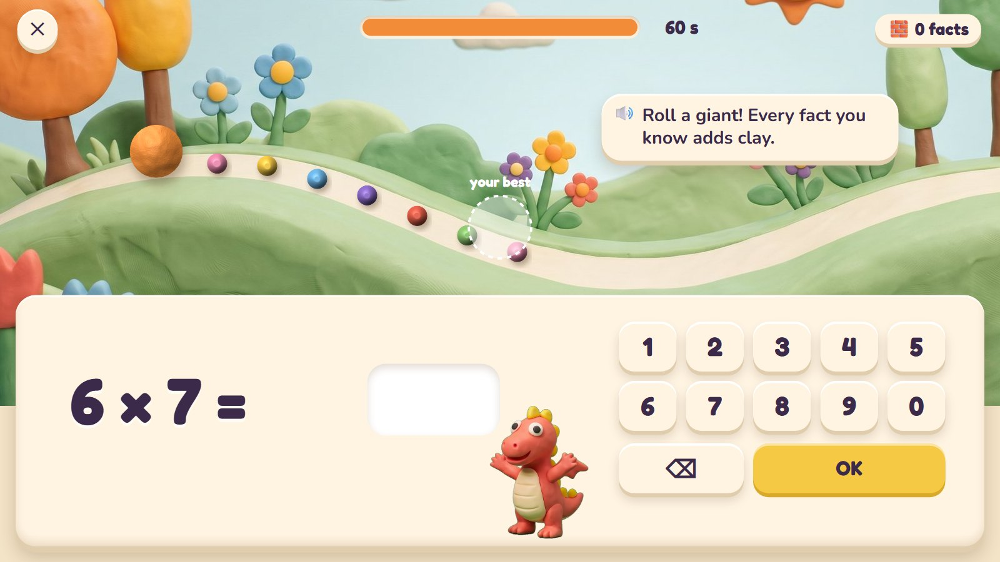
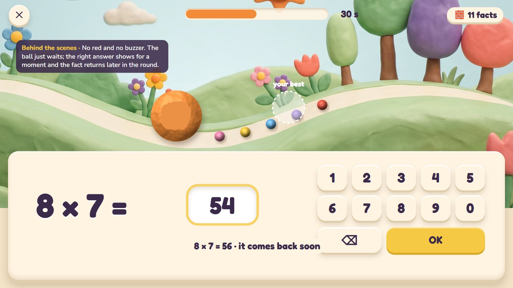
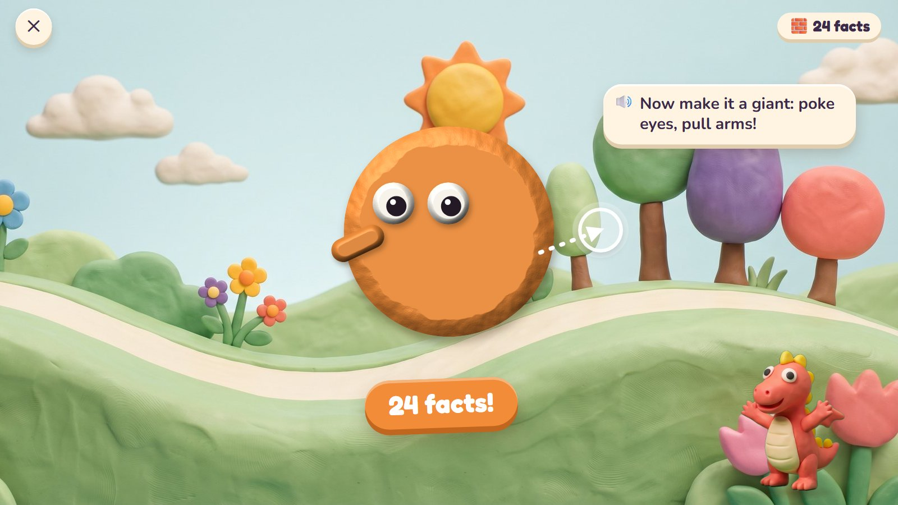
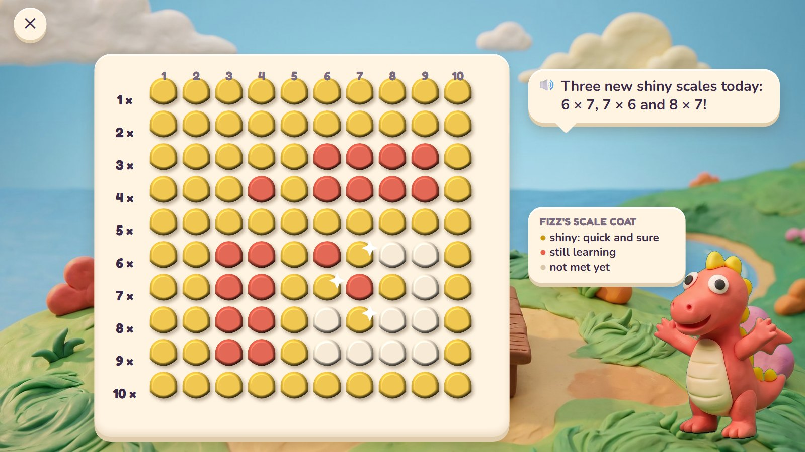
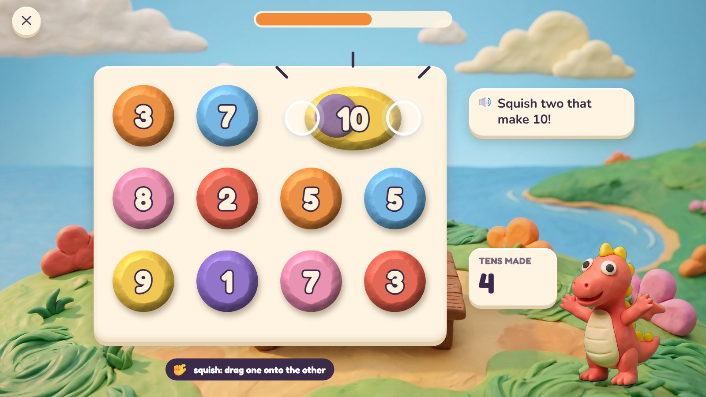
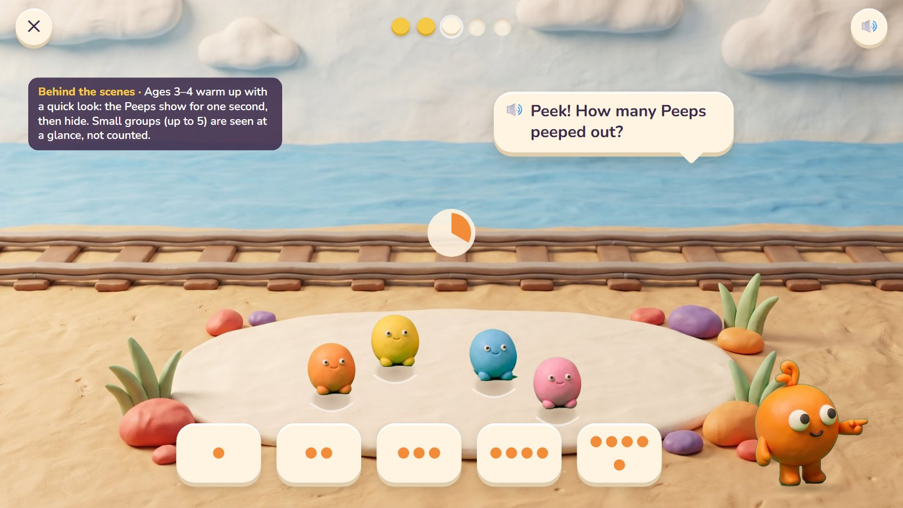

Speed: Roll-a-Giant
Knowing number facts quickly (7 + 6, 8 × 7) frees a child's mind for harder maths. In Clay Bay, speed makes something: every fact answered rolls a clay ball over another lump of clay, so the ball grows, and at the end it becomes a giant that joins Giants' Row. Fizz the dragon wears the Scale Coat, one scale for every fact, which turns shiny as each fact becomes quick and sure.
One round, six moments

1Ready
A small clay ball at the start of the hill path, lumps of clay waiting along it, and the best round so far rolling ahead as a see-through ghost. Below: the fact and the pad.
🔊 Roll a giant! Every fact you know adds clay.
Only facts the child has already learned. From age 8 a 60-second round (the timer can be hidden); ages 5–7 get ten facts and no clock.

2Rolling
Nine facts in: every right answer rolled the ball over the next lump, which stuck. Five in a row.
Only the ball moves, up in the hills; the fact stays big and still and the pad never moves.

3A miss
8 × 7: the child typed 54. The ball waits at its lump. The answer shows for a moment, and the fact comes back later in the round.
No red, no buzzer, nothing lost: the ball keeps all its clay.

4Make a giant
Time is up: 24 facts and a big ball. Ten seconds to poke in eyes and pull out arms, just for fun.
🔊 Now make it a giant: poke eyes, pull arms!
This part is not scored. It turns the round into something the child made.

5Giants' Row
The giant walks up to Giants' Row on the hill: one giant a day, as tall as the facts answered. A new best wears a crown.
A smaller giant is just as welcome in the row. The row is a progress chart a child can read.

6Fizz's Scale Coat
One scale for each times fact. Shiny: quick and sure. Coral: still learning. Cream: not met yet. Today three scales turned shiny.
🔊 Three new shiny scales today: 6 × 7, 7 × 6 and 8 × 7!
Adding and taking-away facts get their own coat. Parents see the same as a plain table.
For bonds, and for the youngest


Fast, never stressful
✋ Still and steady
The fact is big and still; the pad never moves. Only the ball moves, out of the way at the top. A miss shows the right answer for a moment, and that fact comes back later in the round.
⏱️ The clock
Ages 5–7: ten facts and no clock. From age 8: an optional 60 seconds, and the timer can be hidden. A child who turns it off is never paid less.
✨ Shiny scales
A fact's scale turns shiny when it is right on the first try within about 3 seconds (4 in Grade 1), on three different days. Only learned facts come into the round, so a child is never timed on something new.
🏔️ Against yourself
The ghost ball is the child's own best round, and Giants' Row is the child's own history. No ranking against other children.
Questions about speed
- Roll-a-Giant as the daily warm-up, with Giants' Row and the Scale Coat: does this feel right?
- Should children aged 8–10 also see a speed level for each times table (for example "quick" or "lightning"), or only the shiny scales?
- Squish Pairs as a second speed game for number bonds: keep it?